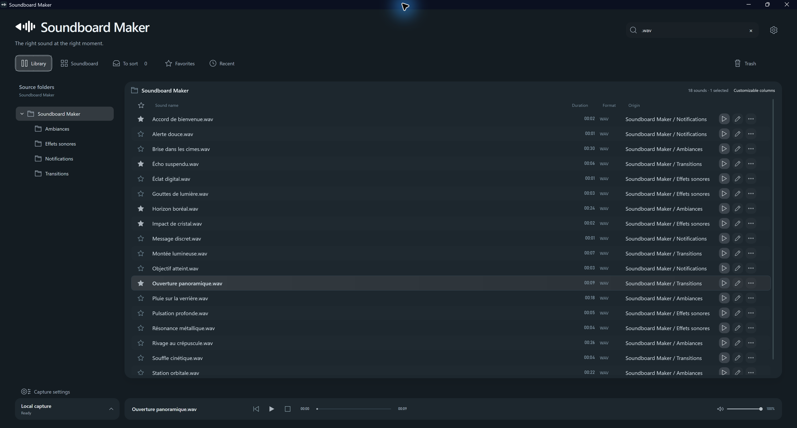

01
Organize
Find sounds quickly with libraries, folders, favorites and search.
Organize, edit and trigger your sounds from one desktop app. Stream Deck optional.

JUST WHAT YOU NEED
One consistent workspace to prepare, find and play the right sound at the right time.
Find sounds quickly with libraries, folders, favorites and search.
Trim clips, adjust your audio and keep only the part that matters.
Record system audio or save the last seconds with Replay Buffer.
Play sounds from the built-in Soundboard or your Stream Deck keys.
THE REAL APP
Four official screenshots.
NO EXTRA HARDWARE
Create pages, arrange keys and play multiple sounds independently. A physical Stream Deck is completely optional.
Wave Link is needed to route sounds into a virtual microphone with the supported setup. It is not required for regular headphone or speaker playback.
READY WHEN YOU ARE
One straightforward installer. The Stream Deck plugin is optional.
The complete desktop app. Library, editing, recording and Soundboard included.
Download the app ↗Control Soundboard Maker with Elgato Stream Deck. Manual installation until Marketplace availability.
Download the plugin ↗Soundboard Maker works without a Stream Deck. No portable ZIP distribution is offered.
A GROWING PROJECT
Have an idea, found a bug or just want to share your experience? Join in on GitHub.